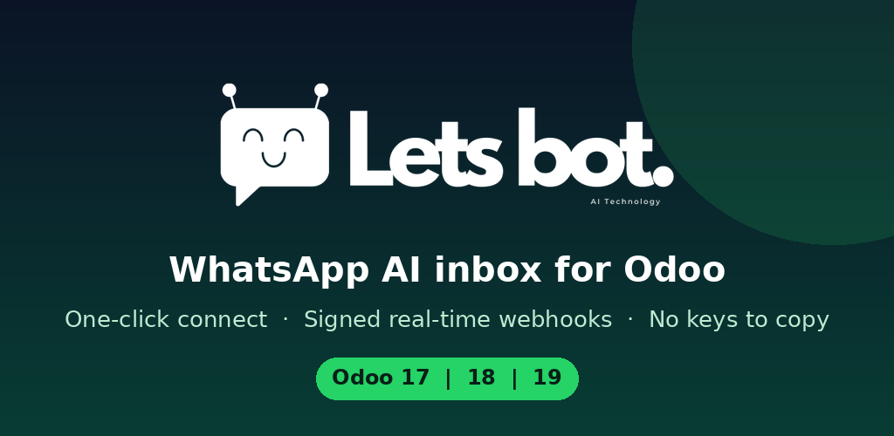

Requirements: a LetsBot account (letsbot.net) and outgoing HTTPS access from your Odoo server. Works with Odoo Community and Enterprise, on-premise and Odoo.sh. Note: the dedicated integration user is an internal user; on plans billed per user you can instead pick an existing user under Advanced.
Questions? support@letsbot.net · letsbot.net